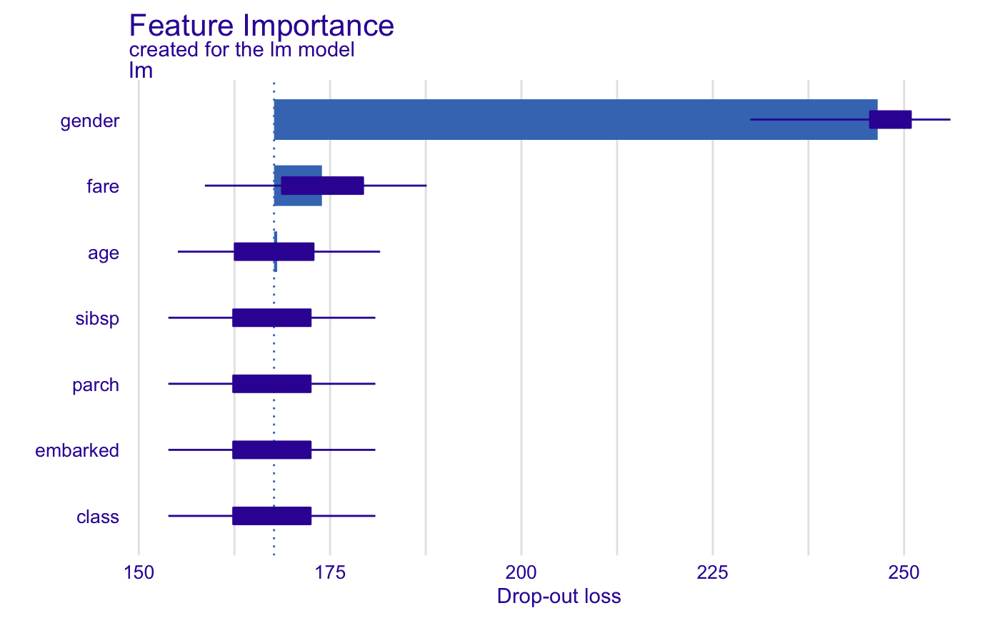
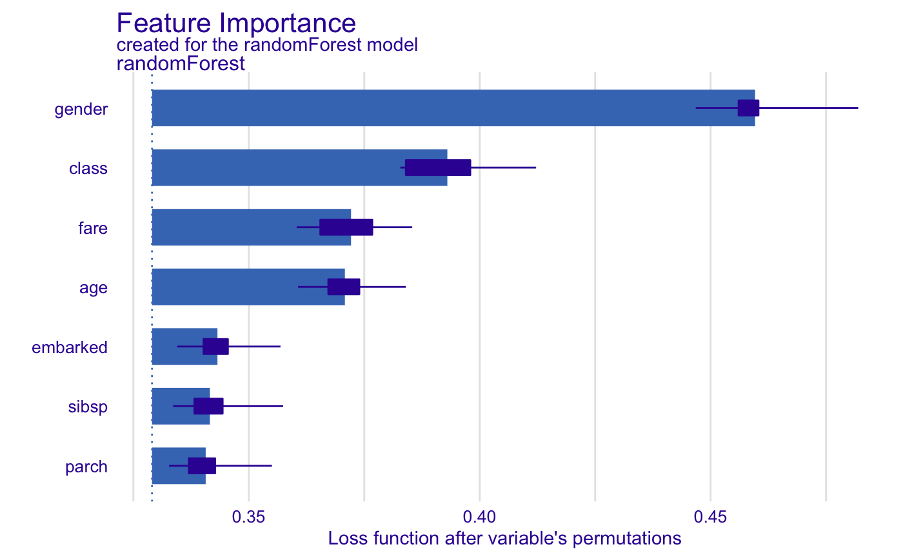
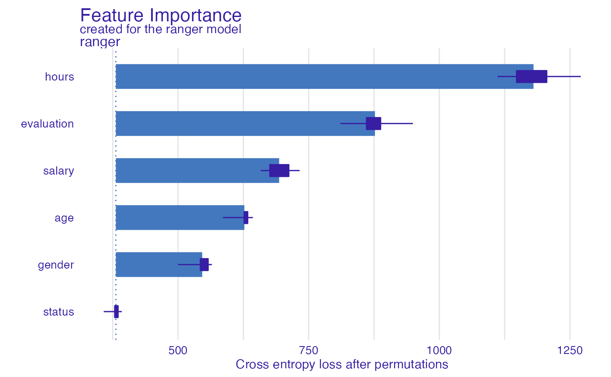
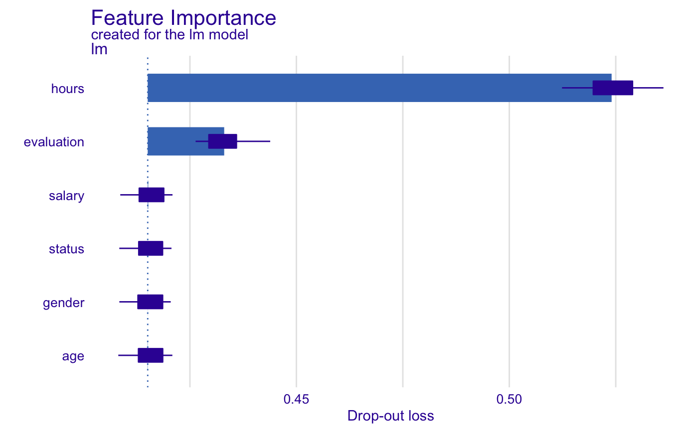
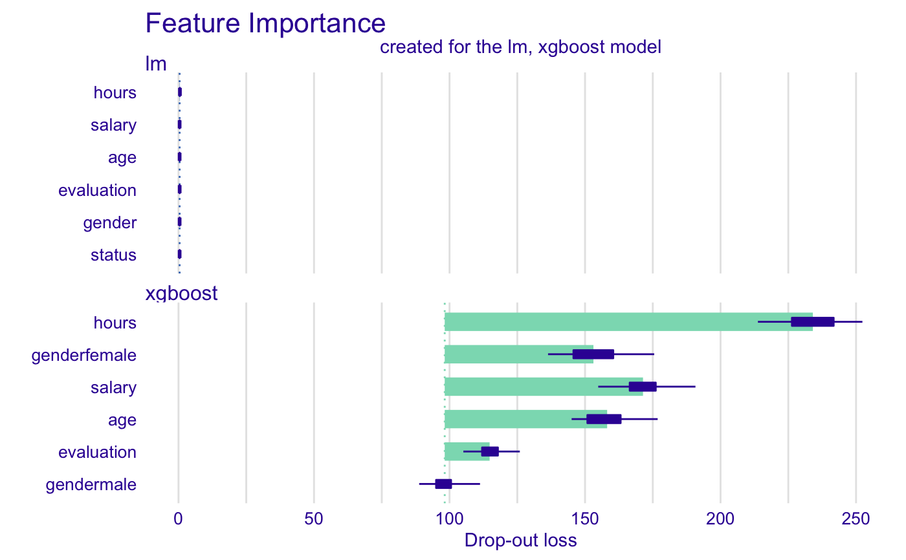

This function plots variable importance calculated as changes in the loss function after variable drops.
It uses output from feature_importance function that corresponds to
permutation based measure of variable importance.
Variables are sorted in the same order in all panels.
The order depends on the average drop out loss.
In different panels variable contributions may not look like sorted if variable
importance is different in different in different models.
# S3 method for feature_importance_explainer plot( x, ..., max_vars = NULL, show_boxplots = TRUE, bar_width = 10, desc_sorting = TRUE, title = "Feature Importance", subtitle = NA )
| x | a feature importance explainer produced with the |
|---|---|
| ... | other explainers that shall be plotted together |
| max_vars | maximum number of variables that shall be presented for for each model.
By default |
| show_boxplots | logical if |
| bar_width | width of bars. By default |
| desc_sorting | logical. Should the bars be sorted descending? By default TRUE |
| title | the plot's title, by default |
| subtitle | the plot's subtitle. By default - NA, which means the subtitle will be 'created for the XXX model', where XXX is the label of explainer(s) |
a ggplot2 object
Find more details in the Feature Importance Chapter.
Explanatory Model Analysis. Explore, Explain and Examine Predictive Models. https://pbiecek.github.io/ema
library("DALEX") model_titanic_glm <- glm(survived ~ gender + age + fare, data = titanic_imputed, family = "binomial") explain_titanic_glm <- explain(model_titanic_glm, data = titanic_imputed[,-8], y = titanic_imputed[,8])#> Preparation of a new explainer is initiated #> -> model label : lm ( default ) #> -> data : 2207 rows 7 cols #> -> target variable : 2207 values #> -> model_info : package stats , ver. 3.6.3 , task regression ( default ) #> -> predict function : yhat.glm will be used ( default ) #> -> predicted values : numerical, min = 0.1490412 , mean = 0.3221568 , max = 0.9878987 #> -> residual function : difference between y and yhat ( default ) #> -> residuals : numerical, min = -0.8898433 , mean = 4.198546e-13 , max = 0.8448637 #> A new explainer has been created!# \donttest{ library("randomForest") model_titanic_rf <- randomForest(survived ~., data = titanic_imputed)#> Warning: The response has five or fewer unique values. Are you sure you want to do regression?explain_titanic_rf <- explain(model_titanic_rf, data = titanic_imputed[,-8], y = titanic_imputed[,8])#> Preparation of a new explainer is initiated #> -> model label : randomForest ( default ) #> -> data : 2207 rows 7 cols #> -> target variable : 2207 values #> -> model_info : package randomForest , ver. 4.6.14 , task regression ( default ) #> -> predict function : yhat.randomForest will be used ( default ) #> -> predicted values : numerical, min = 0.01138871 , mean = 0.3225311 , max = 0.9907274 #> -> residual function : difference between y and yhat ( default ) #> -> residuals : numerical, min = -0.790294 , mean = -0.0003743686 , max = 0.8992851 #> A new explainer has been created!HR_rf_model <- randomForest(status~., data = HR, ntree = 100) explainer_rf <- explain(HR_rf_model, data = HR, y = HR$status, verbose = FALSE, precalculate = FALSE) fi_rf <- feature_importance(explainer_rf, type = "raw", max_vars = 3, loss_function = loss_cross_entropy) head(fi_rf)#> variable mean_dropout_loss label #> 1 _full_model_ 246.6981 randomForest #> 2 status 246.6981 randomForest #> 3 gender 489.5142 randomForest #> 4 age 640.4705 randomForest #> 5 salary 706.1146 randomForest #> 6 evaluation 984.7808 randomForestplot(fi_rf)HR_glm_model <- glm(status == "fired"~., data = HR, family = "binomial") explainer_glm <- explain(HR_glm_model, data = HR, y = HR$status == "fired")#> Preparation of a new explainer is initiated #> -> model label : lm ( default ) #> -> data : 7847 rows 6 cols #> -> target variable : 7847 values #> -> model_info : package stats , ver. 3.6.3 , task regression ( default ) #> -> predict function : yhat.glm will be used ( default ) #> -> predicted values : numerical, min = 0.00861694 , mean = 0.3638333 , max = 0.7822214 #> -> residual function : difference between y and yhat ( default ) #> -> residuals : numerical, min = -0.7755901 , mean = -1.293796e-13 , max = 0.9820537 #> A new explainer has been created!fi_glm <- feature_importance(explainer_glm, type = "raw", loss_function = loss_root_mean_square) head(fi_glm)#> variable mean_dropout_loss label #> 1 _full_model_ 0.4141092 lm #> 2 age 0.4141086 lm #> 3 status 0.4141092 lm #> 4 gender 0.4141740 lm #> 5 salary 0.4142036 lm #> 6 evaluation 0.4332210 lmplot(fi_glm)library("xgboost") model_martix_train <- model.matrix(status == "fired" ~ . -1, HR) data_train <- xgb.DMatrix(model_martix_train, label = HR$status == "fired") param <- list(max_depth = 2, eta = 1, silent = 1, nthread = 2, objective = "binary:logistic", eval_metric = "auc") HR_xgb_model <- xgb.train(param, data_train, nrounds = 50) explainer_xgb <- explain(HR_xgb_model, data = model_martix_train, y = HR$status == "fired", label = "xgboost")#> Preparation of a new explainer is initiated #> -> model label : xgboost #> -> data : 7847 rows 6 cols #> -> target variable : 7847 values #> -> model_info : package Model of class: xgb.Booster package unrecognized , ver. Unknown , task regression ( default ) #> -> predict function : yhat.default will be used ( default ) #> -> predicted values : numerical, min = 1.687903e-06 , mean = 0.363713 , max = 0.9996712 #> -> residual function : difference between y and yhat ( default ) #> -> residuals : numerical, min = -0.9885727 , mean = 0.0001203494 , max = 0.9970635 #> A new explainer has been created!#> variable mean_dropout_loss label #> 1 _full_model_ 98.22955 xgboost #> 2 gendermale 98.22955 xgboost #> 3 evaluation 114.79861 xgboost #> 4 genderfemale 153.09930 xgboost #> 5 age 158.15857 xgboost #> 6 salary 171.38984 xgboost# }